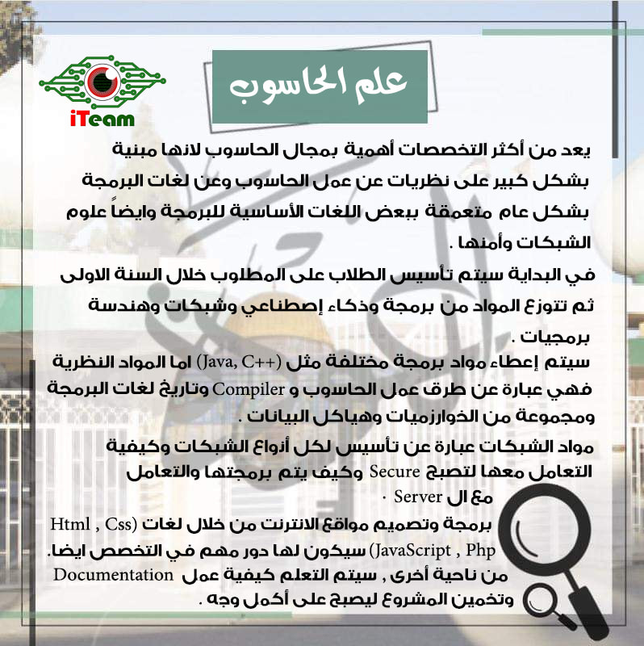
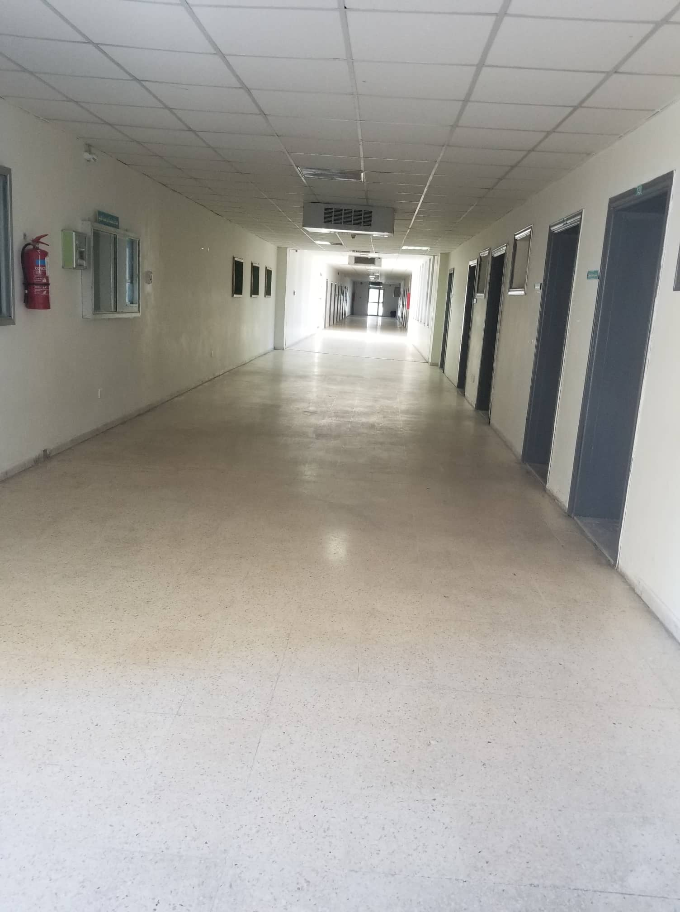
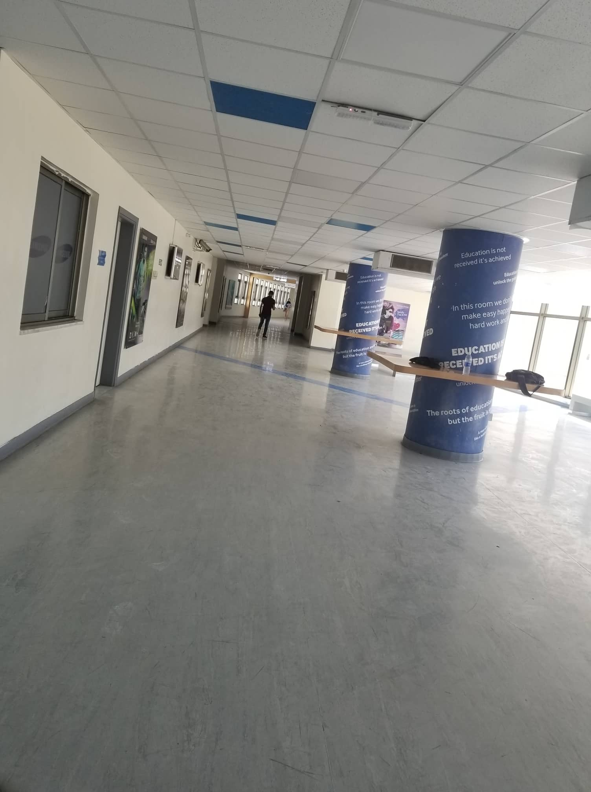

This shortcut stands for Computer Science which is a very hard and enjoyable university specialization to study , in this section of KASIT there is a lot of mathematics in aim to understand the brain of our computers so we can write our codes easily .
 